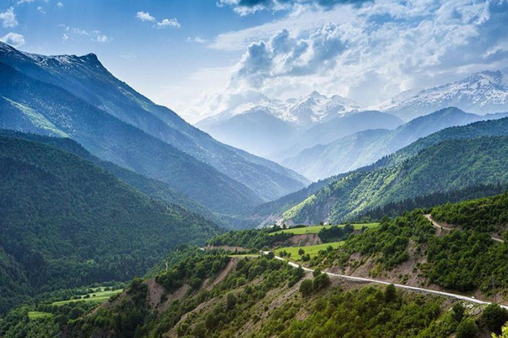
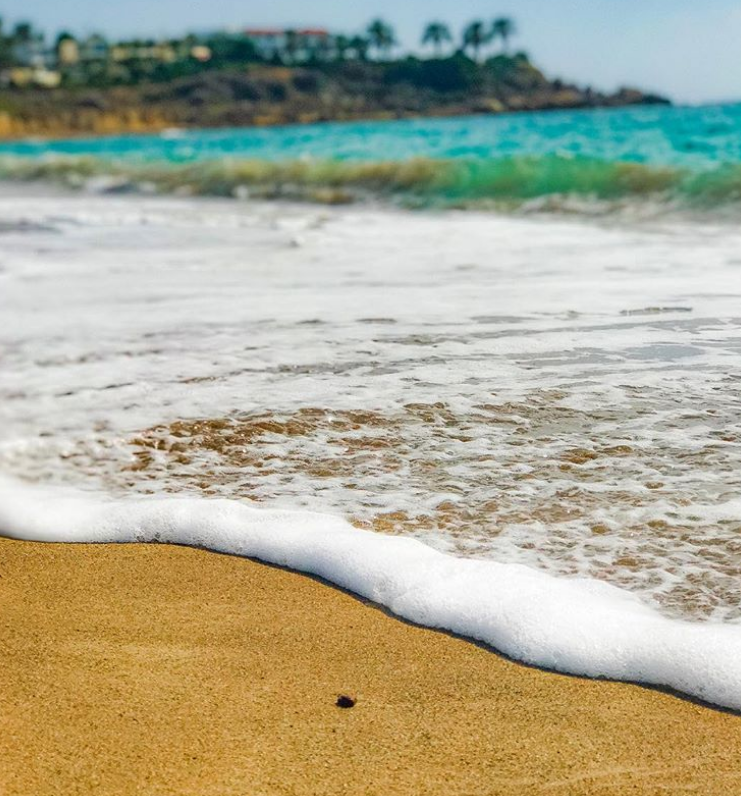
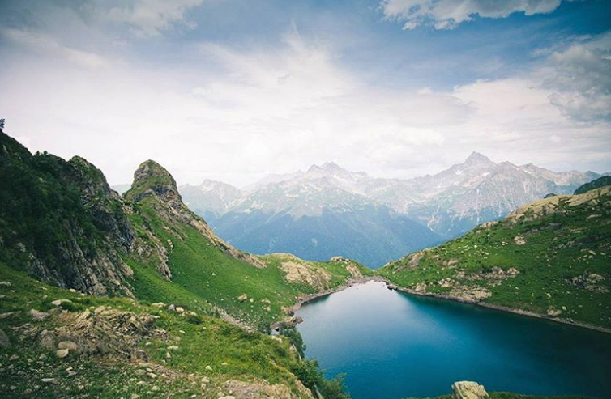
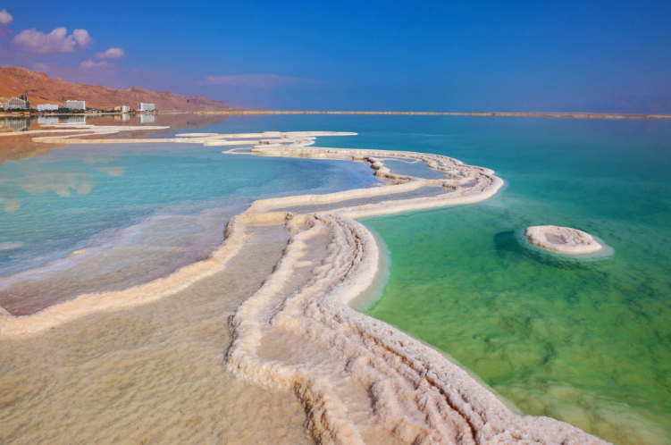
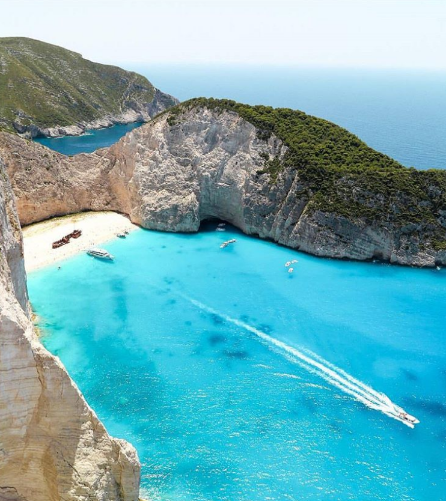
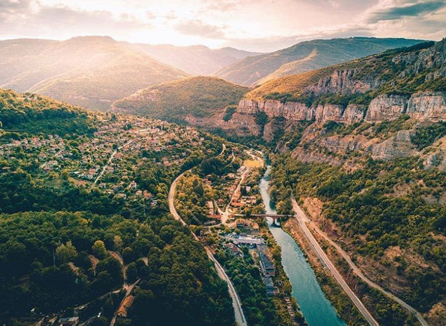
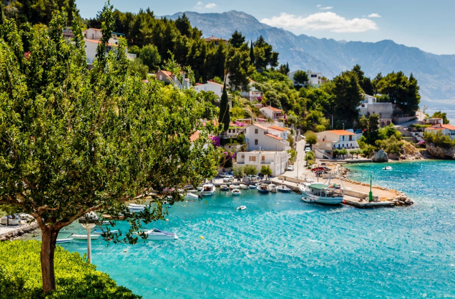
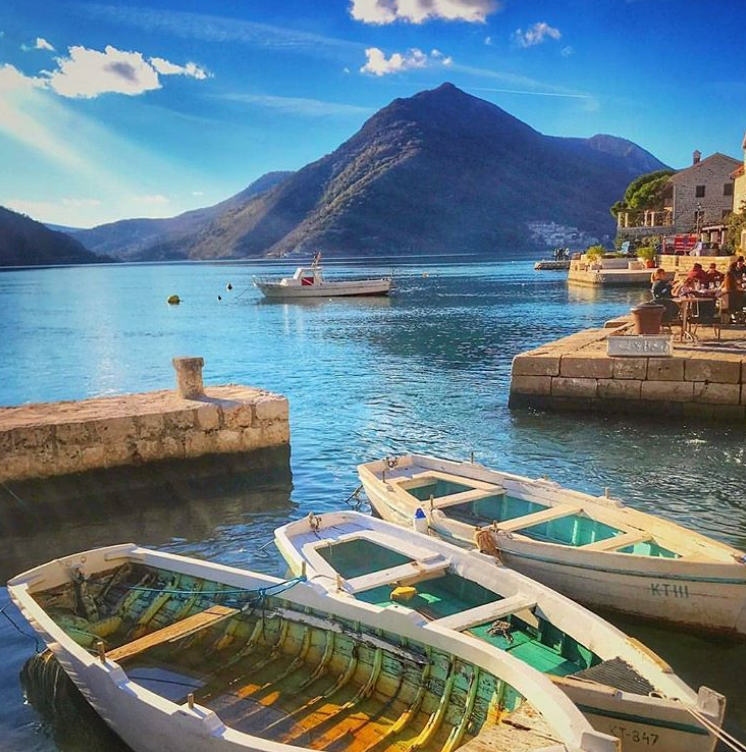
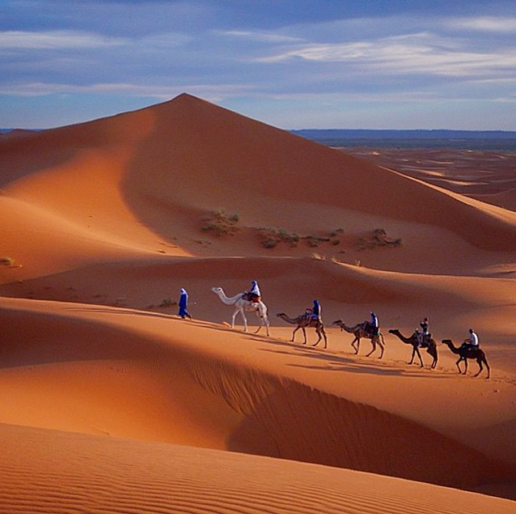
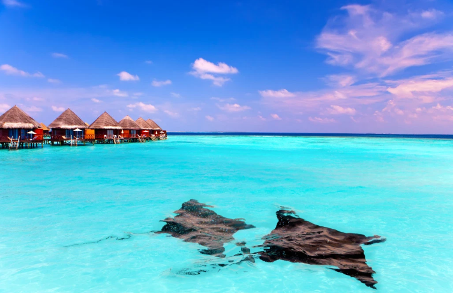

10 лучших мест для отдыха по мнению туристов в 2020 году
Грузия

Достаточно один раз увидеть летнюю Грузию, чтобы полюбить эту страну всей душой. Купаться и загорать поезжайте в романтичный Батуми, в Кобулети с сосновым лесом или на зеленый мыс Мцване-Концхи, у берегов которого хорошо понырять с маской. От собственных черноморских курортов Грузия отвлекает удивительными пещерными городами Уплисцихе и Вардзия, древними монастырями Мцхеты, изумрудными пиками Сванетии и серными банями в Тбилиси. И уж конечно, грузины не поймут, если вы уедете, так и не попробовав настоящие хинкали и местное вино.
Кипр

Как за один отпуск перенестись в античные времена, познакомиться с муфлонами, загореть до бронзового на пляже, нырнуть к затонувшему кораблю и помолодеть на пару-тройку лет? Отправляйтесь на Кипр! Будете есть апельсины прямо с деревьев, пить королевское вино и заводить новые знакомства. Особенно для этого подходит тусовочный Нисси-Бич в Айя-Напе. На берегу залива Фигового дерева хорошо отдыхать с детьми, а у мыса Греко –– нырять в Голубую лагуну и нежиться вдвоем на романтичном пляже Коннос Бэй. А чтобы ваша любовь жила вечно, искупайтесь вместе в бухте у скал Афродиты между Лимасолом и Пафосом.
Абхазия

Чтобы отдыхать на пляжах Гудауты, Гагры и Пицунды и объедаться сочными абрикосами, вам не понадобятся ни виза, ни загранпаспорт. От Адлера до абхазской границы каких-то 10 км –– добираться удобно, жилье недорогое, говорят здесь по-русски, а кормят щедро и вкусно. Кроме солнечных и морских ванн, вас ждут полеты на параплане, погружения к древним подводным городам и прогулки в фантастическом заповеднике у озера Рица. Обязательно побывайте в карстовых пещерах Нового Афона, прикоснитесь к истории у Келасурской стены и поздоровайтесь с самым известным старожилом Абхазии –– 300-летней кавказской липой в Сухумском ботаническом саду.
Израиль

Чтобы понять, в чем цимес жизни, отправляйтесь в праздный Тель-Авив с древним Яффо. А чтобы выяснить, в чем ее соль, –– на курорты Мертвого моря. Дайверы и кайтсерферы облюбовали коралловый пляж Хоф Альмог на Красном море –– за активными водными развлечениями поезжайте сюда. Пляжный отдых в Израиле выше всяких похвал, но хотя бы на пару дней выбраться в Иерусалим нужно обязательно. Если времени хватает, полюбуйтесь Бахайскими садами в Хайфе и съездите в гости к друзам –– поискать диковинки на пестром базаре и полакомиться местной питой с козьим сыром и заатаром.
Греция

О чем вы думаете, когда представляете себе идеальный отпуск? О завтраке на балкончике с видом на бескрайнюю морскую синь? О древних монастырях высоко-высоко в горах? О цветущем безлюдном острове с золотым песочком? Греция исполнит ваши мечты. Полюбуйтесь афинским Акрополем, который помнит времена до нашей эры, и сбегите от проблем на сахарный Санторини. Потрите палец Аристотеля в Салониках, чтобы стать мудрее, и потеряйте голову от пейзажей бухты Наваджио на острове Закинф. Если успеете еще и покорить живописные горы Метеоры, местные монахи в награду угостят вас лукумом собственного приготовления.
Болгария

В солнечной Болгарии все по-домашнему: никаких языковых барьеров и поводов себя ограничивать. Ешьте фрукты впрок, катайтесь по волнам на смешном розовом матрасе и просветляйтесь в церквях Несебра и в заповеднике у Рильских озер. Ваше дело –– бродить по древним руинам, вдыхать ароматы Долины роз и лакомиться нежной кавермой и свежим таратором, а больше вы ничего никому не должны.
Хорватия

В чем в чем, а в умении выбирать место под солнцем Ланнистерам из «Игры престолов» не откажешь: роль столицы Вестероса далась Дубровнику легко. Но в Хорватии сидеть на одном месте, пусть это даже Железный трон в Королевской гавани, –– преступление. Побродите по пешеходным тропкам у Плитвицких озер, затерянных в хвойных и буковых лесах. Побывайте в замке Тракошчан, спуститесь в пещеру Вранжака, выберите любимый из островов Адриатики и переночуйте на маяке. А на прощание загляните в живописные деревушки Хорватского Загорья и привезите домой деревянную игрушку на память о теплом и душевном отпуске.
Черногория

Как отдохнуть в Европе без визы и куда недорого съездить на море за границу? Ответ на оба вопроса –– Черногория. Побываете здесь разок –– будете возвращаться снова и снова. Чтобы позагорать у чистого моря на золотом песке, оторваться на фестивале SEA DANCE и понырять с маской у полуострова Луштица. Чтобы полюбоваться Скадарским озером, дворцами и замками Пераста и скальным монастырем Острог. Чтобы поправить здоровье на грязевом курорте Игало, полакомиться буреками с хреновками и запить все это балканским бренди –– ракией. Проверено: фотографии летнего отдыха в Черногории согревают даже самыми морозными зимними вечерами.
Марокко

За один отпуск в безвизовом королевстве Марокко можно искупаться и в Средиземном море, и в Атлантическом океане. Самые популярные курорты на берегу океана –– Агадир и Эс-Сувейра: здесь отличный сервис, но и народу предостаточно. Чтобы «высадиться на Марсе» подальше от туристов, отправляйтесь на океанский красный пляж Легзира. За активным отдыхом поезжайте на «марокканские Гавайи» –– побережье бухты Дахла на юго-западе страны. Из местного серф-лагеря отправляются джип-туры по Сахаре. Если едете с детьми, нужен отдых поспокойнее — выбирайте средиземноморское побережье между Танжером и Эль-Хосеймой. Тут песчаные пляжи уютно спрятаны в зелени, а ласковые волны теплее, чем в океане.
Мальдивы

На Мальдивах нужно побывать хотя бы раз в жизни. Серферам –– чтобы оседлать идеальную волну. Дайверам –– чтобы нырнуть к гигантским морским черепахам и причудливым кораллам. Влюбленным –– чтобы провести самый сладкий медовый месяц в жизни. Любителям ставить новые рекорды –– чтобы пересечь экватор у атолла Адду. А поклонникам диковинок –– чтобы пожить в подводном отеле и вместо кофе по утрам пить коктейли прямо из кокоса. Слетать на Мальдивы можно дешевле, чем вы думаете: Qatar Airways, Emirates и Etihad Airways частенько устраивают распродажи авиабилетов на эти райские острова.